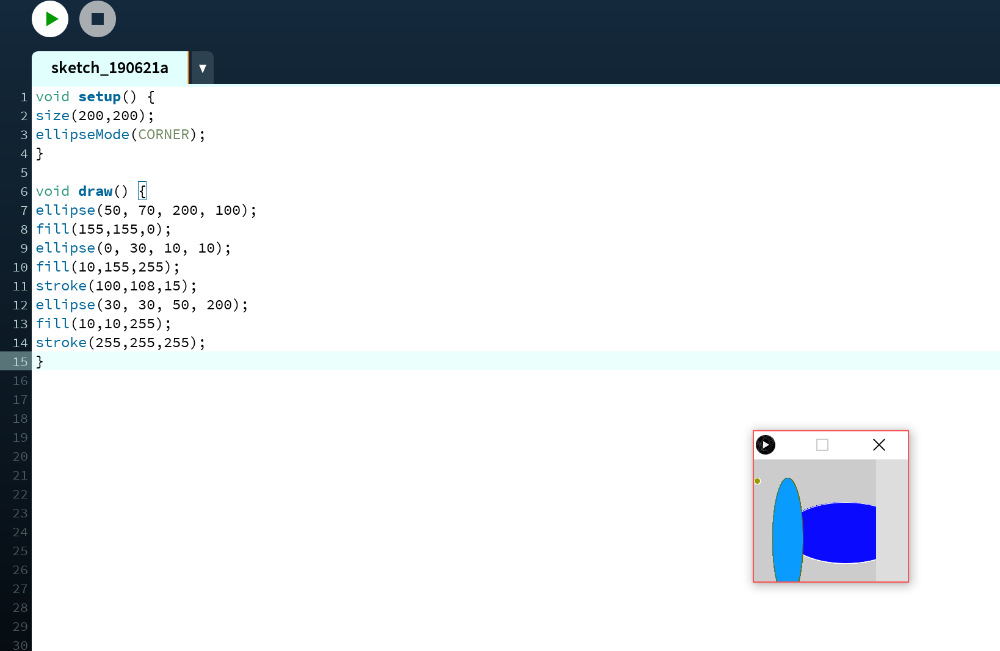
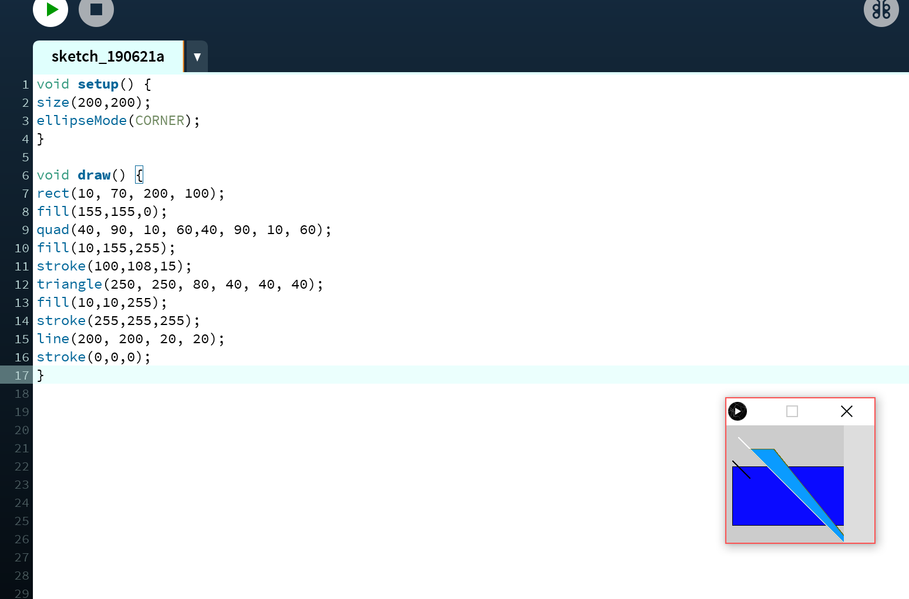
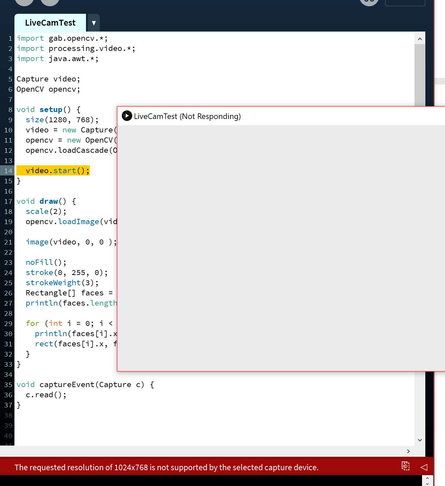
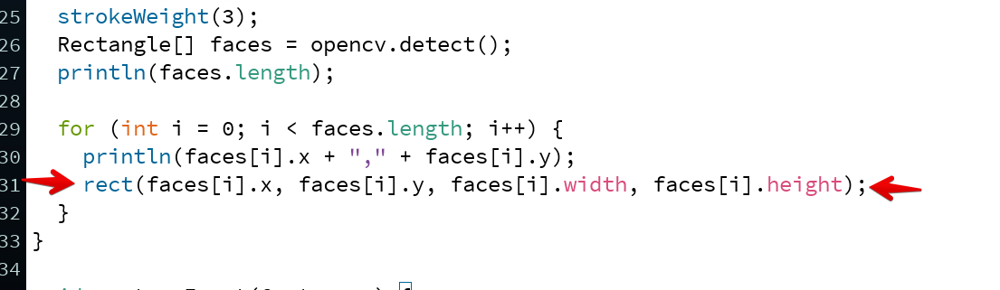
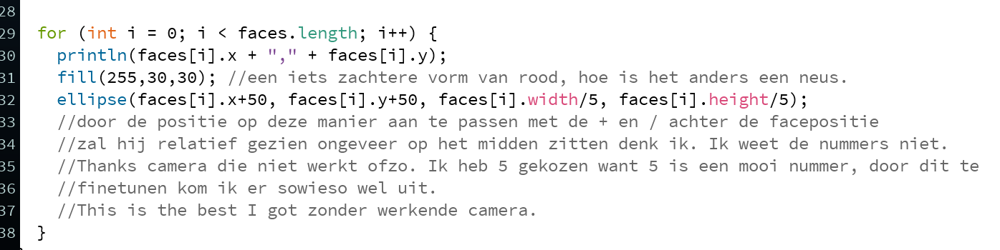
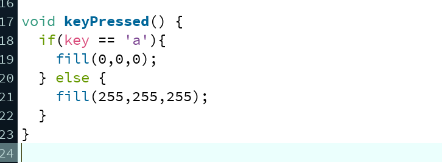
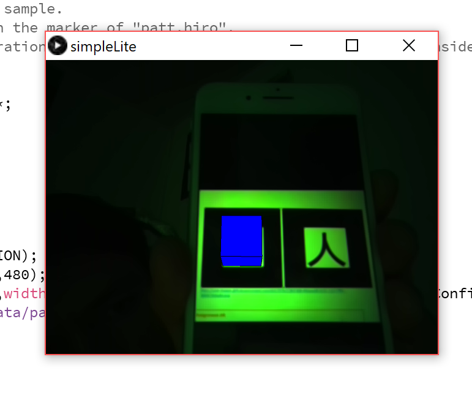

Een paar cirkels
De eerste opdracht om bekend te raken met het programma "processing".
Een paar niet-cirkels
De tweede opdracht om iets beter bekend te raken met het programma "processing".
Interactiviteit met de muis
Bij deze opdracht moest er een interactie komen met de vormen wanneer de musi beweegt.
Opdracht live camera tracking
Stierf. Hard. Iets over resolutie. Ik heb deze geprobeerd aan te passen zoals de manual zei, maar hij had er nog geen zin in.
Hier is de opdracht over het vierkantje. Ik zeg regel 31. Dat maakt het vierkantje om het gezicht heen.
Verander dat blokje in iets anders: een clownsneus
Ik heb geen werkende camera, maar ik kan wel theorycraften hier over de code. De aanpassing die ik zou maken zou zijn:
Ik kan hierdoor alleen de laatste opdracht nog moeilijker maken. Ik ga wel voor een keypress. een if statement die hopelijk zou werken. Dit is puur hypothetisch. Dit is het beste dat ik kan gokken gezien mijn niet functionele camera en test-loze situatie.
De AR, dit is kunst
Vind het supermooi hoe dit zo werkt. Ik snap het niet erg goed, maar ik vind het gewoon bijzonder. Jammer dat het zo minder productief was om het voorbeeld te laten werken op mijn camera. Maar in ieder geval besloot mijn camera bij deze oefening wel mee te werken!
